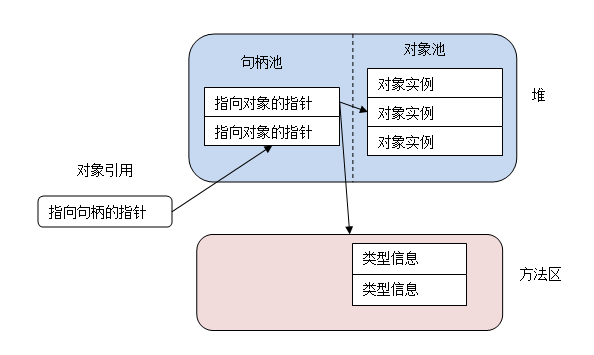
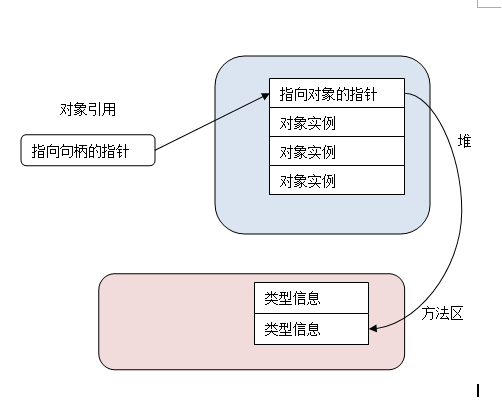
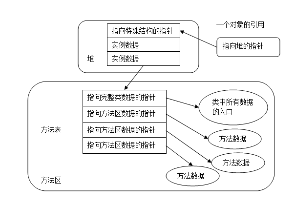

Java程序运行时所创建的所有类实例或数组都放在堆中，一个Java虚拟机实例中只存在一个堆空间，所有线程共享这个堆。因为每个Java虚拟机独占一个Java虚拟机实例，所有每个Java程序都有他自己的堆空间，而不会彼此干扰。
Java虚拟机有一条在堆中分配对象的指令，却没有释放内存的指令，虚拟机自己决定如何以及何时释放不再被运行的程序引用的对象所占据的内存。程序本身不用去考虑何时需要回收所占用的内存，通常虚拟机会把内存回收的事情交给垃圾回收器来处理，关于垃圾回收器，后面再进行分析。
和方法区一样，堆空间也不必是连续的内存区，程序运行时，它可以动态的扩展或者收缩。Java虚拟机并没有规定Java对象在堆中是如何表示的，对象的内部表示也影响着整个堆以及垃圾收集器的设计。
对象的内部表示
Java对象中包含的基本数据由它所属的类及其所有超类声明的实例变量组成，只要有一个对象引用，虚拟机就必须能够快速的定位对象实例的数据，另外，它必须通过该对象引用访问相应的存储在方法区中的类信息。因此，对象中通常会有一个指向方法区的指针。
一种可能的堆空间设计就是：
把堆分成两部分，一个句柄池，一个对象池。而一个对象的引用就是一个指向句柄池的本地指针。

句柄池的每条包含两个部分，一个想象对象实例变量的指针，一个指向方法区的类型数据的指针。这种设计的好处在于有利于堆碎片的整理，当移动对象池的对象时，句柄部分只需要更改一下指针指向对象的新地址就可以了，缺点是每次访问对象的实例变量都要经过两次指针传递。
另外一种设计的方法就是使对象指针直接指向一组数据，而该数据包括对象实例数据以及指向方法区中类数据的指针，这样的设计的优缺点与前一种方法正好相反，只需要一个指针就能找到对象实例，但是移动对象变得麻烦了起来。使用这种堆的虚拟机为减少内存碎片而移动对象的时候，必须在整个运行时数据区中更新指向被移动对象的引用。

通过对象引用得到类型数据
当程序在运行时需要转换某个对象引用为另一种类型时，虚拟机必须要检查这种转换是否被允许，被转换的对象是否的确是被引用的对象或者是它的超类型。当程序在执行instanceof操作时，虚拟机也进行了同样的检查。在这两种情况下，虚拟机都需要查看被引用对象的类数据。另外，当程序中调用某个实例方法时，虚拟机必须进行动态绑定，即它不能按照引用的类型来决定将要调用的方法，而是必须根据对象的实际类。
方法表
不管虚拟机使用什么样的对象表示法，每个对象最好都有一个方法表，方法表的存在加快了调用实例方法时的效率。但是，具有某些严格内存限制的虚拟机可能对象中不会存在方法表。
如果虚拟机使用了方法表，那么只要使用一个指向对象的引用，就可以很快的访问到对象的方法表。

上图展示了一种把方法表和对象引用联系起来的实现方式，每个对象的数据都包含一个纸箱特殊数据结构的指针，这个数据结构位于方法区：
1）一个指向方法区对应类数据的指针
2）此对象的方法表
方法表是个指针数组，其中的每一项都是一个指向是力帆发数据的指针，实例方法可以被那类的对象调用，方法表指向的实例方法数据包括：
1）此方法的操作数栈和局部变量区的大小
2）此方法的字节码
3）异常表
这些信息足够虚拟机去调用一个方法。
对象锁
堆上的对象数据还包含一个逻辑部分，那就是对象锁，这是一个互斥对象。虚拟机中每个对象都有一个对象锁，它被用于协调多个线程访问同一个对象时的同步。在任何时刻，只能有一个线程获得对象锁，因此只有这个线程才能访问该对象的数据，此时，其它访问该对象的线程只能等待，直到拥有对象锁的线程释放锁。当某个线程拥有一个对象锁后，可以继续对这个锁追加请求，但是请求几次必须对应的释放几次，然后才能轮到其他线程。比如一个线程请求了三次锁，那么它释放三次锁之前，它一直拥有这个所。
很多对象在其整个生命周期内都没有被任何线程加锁，在线程实际请求某个对象的锁之前，实现对象锁所需要的数据是不必要的，很多实现不在对象自身内部保存一个指向锁数据的指针，而只有当第一次需要加锁的时候才分配对象的锁数据，但这时虚拟机需要用某种间接方法来联系对象数据和对象的锁数据。
等待集合 wait set
除了实现锁所需的数据外，每个java对象逻辑上海域实现等待集合的数据相关联。锁是用来实现多个线程对共享数据的互斥访问的，而等待集合是用来让多个线程为完成一个共同目标而协调工作的。
等待集合由等待方法和通知方法联合使用，每个类都从Object那儿继承了三个等待方法wait()方法和连个通知方法notify()和notifyAll()。当某个线程在一个对象上调用等待方法时，虚拟机就阻塞这个线程，并把它放在找个对象的等待集合中。知道另一个线程在同一个对象上调用通知方法，虚拟机才会在之后的某个时刻唤醒一个或者多个在等待集合中被阻塞的线程。
与垃圾回收有关的数据
与垃圾回收器有关的数据，也是存放在堆中，这个后面垃圾回收时再做分析。
总结
堆是Java程序运行时的重要内存区，是垃圾回收器作用的主要场所，主要由众多的对象实例组成。